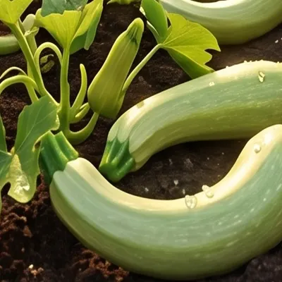

Capitolo primo · La terra
C'è una storia che ad Albenga si ripete ogni mattina. Comincia qui, nella terra scura della piana. Scorri, e guardala crescere.

Tutto comincia nella terra
Prima del sole, prima di tutto: semi, acqua e mani che sanno quel che fanno.
Ogni germoglio ha i suoi tempi
Qui nessuno ha fretta: nella piana di Albenga le cose buone crescono con calma.
Sole, mare e pazienza
L'aria di Liguria fa metà del lavoro. L'altra metà la fa chi l'orto lo conosce da una vita.
Pronti per il raccolto
Trombette, carciofi violetti, cuore di bue, asparagi: quando sono pronti loro, siamo pronti noi.
Capitolo secondo · Il viaggio
Quando l'ultima cassetta è legata sull'Ape, il sole è appena alzato. Si parte: il banco aspetta.

All'alba si parte
Il motore borbotta, le cassette sono ben strette: il raccolto lascia la campagna.
Pochi chilometri, fatti bene
Niente magazzini, niente attese: solo la strada che scende tra gli ulivi.
Il mare davanti, l'orto alle spalle
Ogni tornante avvicina il banco, e la freschezza non fa in tempo a perdersi.
Albenga in vista
Le case colorate, i campanili, il profumo del mattino: ci siamo quasi.
Capitolo terzo · La bottega
Via Fortino 6, ore sette e mezza. La tenda si srotola, la vetrina si accende: Albenga ha fame di colore.

Eccoci a casa
L'Ape si ferma davanti alla vetrina: è ora di scaricare.
Il banco prende colore
Cassetta dopo cassetta: arance, pomodori, trombette, basilico appena colto.
Scelto a mano, raccontato a voce
Chiedici da dove arriva: te lo diciamo, perché c'eravamo.
Vi aspettiamo da Enrico
Via Fortino 6, Albenga. Il banco più colorato del quartiere — manchi solo tu.
Ogni giorno, da una vita
Questa storia si ripete ogni mattina, dal lunedì al sabato. L'unico finale che cambia è quello che ti porti a casa.
Le nostre stelle
I 4 di Albenga
Le quattro eccellenze della piana, coltivate a due passi dalla bottega. E poi c'è il basilico: dei 4 non è, ma ad Albenga non manca mai.

Zucchina trombetta
Dolce, soda, inconfondibileCarciofo violetto
Tenero, anche crudo
Cuore di bue
Il re dell'insalata
Asparago violetto
Raro e prezioso
Basilico
Profumo di pesto
Vieni a trovarci
La bottega
📍 Indirizzo
Via Fortino 6, 17031 Albenga (SV)
🕐 Orari
- Orari in aggiornamento—
- Chiamaci per info0182 52571